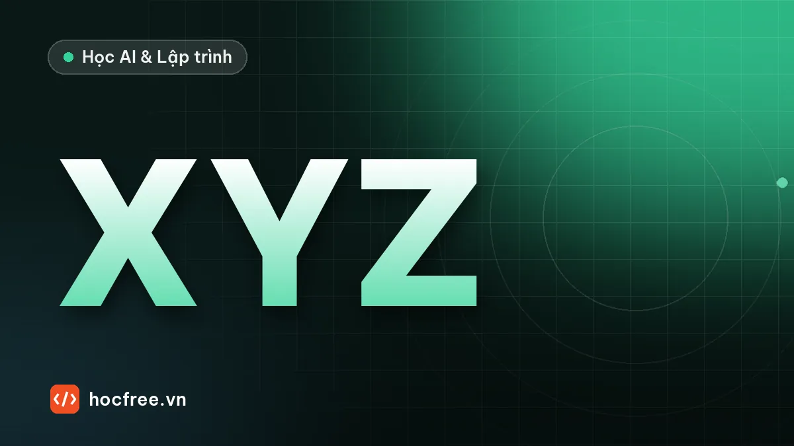

Đám mây điểm với Open3D: RANSAC, DBSCAN, ICP cho kiểm tra
Từ ảnh độ sâu tới đám mây điểm, lọc, RANSAC tìm mặt bàn, DBSCAN tách vật, đo kích thước và tư thế bền nhiễu, ICP so với mô hình để tìm vết lõm 1,5 mm.

Học xong bài này, bạn sẽ
- Đổi ảnh độ sâu sang đám mây điểm, lọc thưa, loại nhiễu
- Tìm mặt chuẩn, tách vật, đo kích thước và tư thế bền nhiễu
- Khớp mô hình bằng ICP để tìm khuyết tật
Nên học trước: Stereo với OpenCV: hiệu chuẩn, rectification, độ sâu
Nội dung bài viết
Laser profiler cho bản đồ chiều cao, camera stereo và ánh sáng cấu trúc cho ảnh độ sâu, nhưng khi cần làm việc với hình học 3D thật sự (vật nằm nghiêng, nhiều vật trong một cảnh, so với mô hình CAD, tính tư thế để robot gắp), dạng dữ liệu chung là đám mây điểm (point cloud): một danh sách các điểm (X, Y, Z). Bài này dùng Open3D, thư viện mã nguồn mở phổ biến cho xử lý dữ liệu 3D, để đi qua một pipeline kiểm tra hoàn chỉnh: đổi ảnh độ sâu sang đám mây điểm, lọc thưa, loại điểm nhiễu, tìm mặt bàn bằng RANSAC, tách từng vật bằng DBSCAN, đo kích thước và tư thế, rồi so với mô hình chuẩn bằng ICP để tìm một vết lõm sâu 1,5 mm.
Cài: pip install open3d numpy opencv-python (bài chạy với Open3D 0.20; xem trang Open3D để biết phiên bản Python được hỗ trợ). Các khối code nối tiếp nhau trong cùng một file. Nên học trước: laser tam giác và bản đồ chiều cao, stereo và bản đồ độ sâu.
1. Từ ảnh độ sâu sang đám mây điểm
Mỗi pixel (u, v) có độ sâu Z của camera nhìn thẳng ứng với một điểm 3D theo mô hình pinhole: X = (u − cx)·Z/fx, Y = (v − cy)·Z/fy. Open3D làm việc này bằng create_from_depth_image; cần chú ý depth_scale: mặc định 1000 (đổi mm sang m), ở đây đặt 1 để giữ đơn vị mm như mọi bài trước. Pixel có độ sâu 0 được coi là thiếu và bị bỏ qua.
import numpy as np
import open3d as o3d
# ảnh độ sâu 640 × 480 (mm, uint16) của camera nhìn thẳng xuống: mặt bàn 500 mm, một khối cao 40 mm ở giữa
fx = fy = 600.0
cx, cy = 320.0, 240.0
sau = np.full((480, 640), 500, np.uint16)
sau[190:290, 260:380] = 460
sau[0:5, :] = 0 # vài hàng không có dữ liệu: 0 = thiếu
noi_tai = o3d.camera.PinholeCameraIntrinsic(640, 480, fx, fy, cx, cy)
pcd_sau = o3d.geometry.PointCloud.create_from_depth_image(
o3d.geometry.Image(sau), noi_tai, depth_scale=1.0, depth_trunc=5000.0) # depth_scale=1: giữ đơn vị mm
print(len(pcd_sau.points), "điểm (pixel có độ sâu 0 bị bỏ qua)")
# tự tính bằng NumPy theo mô hình pinhole: X = (u − cx)·Z/fx, Y = (v − cy)·Z/fy
v, u = np.nonzero(sau)
Z = sau[v, u].astype(np.float64)
tu_tinh = np.c_[(u - cx) * Z / fx, (v - cy) * Z / fy, Z]
print("khớp với Open3D:", np.allclose(np.asarray(pcd_sau.points), tu_tinh))
print("điểm tại pixel (320, 240):", tu_tinh[(u == 320) & (v == 240)][0], "| tại (0, 479):", tu_tinh[(u == 0) & (v == 479)][0])304000 điểm (pixel có độ sâu 0 bị bỏ qua)
khớp với Open3D: True
điểm tại pixel (320, 240): [ 0. 0. 460.] | tại (0, 479): [-266.66666667 199.16666667 500. ]Kết quả khớp tuyệt đối với công thức tự viết. Nếu camera có méo ống kính, phải bỏ méo ảnh độ sâu trước (hoặc dùng đám mây điểm mà SDK của cảm biến đã hiệu chỉnh), đúng như bài hiệu chuẩn nội tại.
2. Cảnh thử: hai vật trên mặt bàn nghiêng
Đám mây điểm tổng hợp mô phỏng một cảm biến 3D nhìn xuống bàn: một hộp 80 × 50 × 40 mm xoay 25° có một vết lõm sâu 1,5 mm trên mặt trên, một khối trụ Ø60 × 60 mm, nhiễu σ = 0,15 mm, 1500 "điểm bay" (flying pixels: điểm sai ở mép vật, hay gặp với stereo và ToF), và cả cảnh nghiêng 1,2° so với cảm biến. Mặt bàn dưới đáy vật bị khuất nên không có điểm.
import numpy as np
import open3d as o3d
rng = np.random.default_rng(0)
o3d.utility.random.seed(0) # RANSAC, lấy mẫu của Open3D: cố định để chạy lại ra cùng kết quả
def luoi(x0, x1, y0, y1, buoc):
x, y = np.meshgrid(np.arange(x0, x1, buoc), np.arange(y0, y1, buoc))
return x.ravel(), y.ravel()
def hop(dai, rong, cao, buoc=1.0, lom=None):
"""Điểm trên mặt trên và 4 mặt bên của hộp (đáy nằm trên z = 0), tâm đáy ở gốc. lom = (x, y, r, sâu): vết lõm."""
x, y = luoi(-dai / 2, dai / 2, -rong / 2, rong / 2, buoc)
z = np.full_like(x, cao)
if lom is not None:
lx, ly, r, sau = lom
d2 = (x - lx) ** 2 + (y - ly) ** 2
z = z - sau * np.clip(1 - d2 / r ** 2, 0, None) # lõm dạng chỏm, sâu nhất ở tâm
pts = [np.c_[x, y, z]]
for s in (-1, 1):
t, h = luoi(-dai / 2, dai / 2, 0, cao, buoc)
pts.append(np.c_[t, np.full_like(t, s * rong / 2), h])
t, h = luoi(-rong / 2, rong / 2, 0, cao, buoc)
pts.append(np.c_[np.full_like(t, s * dai / 2), t, h])
return np.vstack(pts)
def tru(r, cao, buoc=1.0):
x, y = luoi(-r, r, -r, r, buoc)
trong = x ** 2 + y ** 2 <= r ** 2
goc, h = np.meshgrid(np.arange(0, 2 * np.pi, buoc / r), np.arange(0, cao, buoc))
return np.vstack([np.c_[x[trong], y[trong], np.full(trong.sum(), cao)],
np.c_[r * np.cos(goc.ravel()), r * np.sin(goc.ravel()), h.ravel()]])
def dat(pts, goc_do, tx, ty):
"""Xoay quanh trục z một góc rồi dời tới (tx, ty)."""
a = np.radians(goc_do)
R = np.array([[np.cos(a), -np.sin(a), 0], [np.sin(a), np.cos(a), 0], [0, 0, 1]])
return pts @ R.T + [tx, ty, 0]
# cảnh: mặt bàn; hộp 80 × 50 × 40 mm xoay 25° có vết lõm sâu 1,5 mm; trụ Ø60 cao 60
HOP_DAT = (25.0, -80.0, 20.0)
bx, by = luoi(-200, 200, -150, 150, 1.0)
a = np.radians(HOP_DAT[0])
u = (bx - HOP_DAT[1]) * np.cos(a) + (by - HOP_DAT[2]) * np.sin(a) # tọa độ trong hệ của hộp
v = -(bx - HOP_DAT[1]) * np.sin(a) + (by - HOP_DAT[2]) * np.cos(a)
khuat = ((np.abs(u) < 40) & (np.abs(v) < 25)) | ((bx - 90) ** 2 + (by + 40) ** 2 < 30 ** 2)
ban = np.c_[bx[~khuat], by[~khuat], np.zeros((~khuat).sum())] # cảm biến không thấy mặt bàn dưới đáy vật
canh = [ban, dat(hop(80, 50, 40, lom=(15, 8, 9, 1.5)), *HOP_DAT), dat(tru(30, 60), 0, 90, -40)]
diem = np.vstack(canh)
diem += rng.normal(0, 0.15, diem.shape) # nhiễu cảm biến σ = 0,15 mm
bay = np.c_[rng.uniform(-200, 200, 1500), rng.uniform(-150, 150, 1500), rng.uniform(-30, 120, 1500)]
diem = np.vstack([diem, bay]) # 1500 "điểm bay" (flying pixels)
nghieng = np.radians(1.2) # cả cảnh nghiêng 1,2° quanh trục x so với cảm biến
Rx = np.array([[1, 0, 0], [0, np.cos(nghieng), -np.sin(nghieng)], [0, np.sin(nghieng), np.cos(nghieng)]])
diem = diem @ Rx.T + [0, 0, 500] # và cách gốc tọa độ cảm biến 500 mm
pcd = o3d.geometry.PointCloud()
pcd.points = o3d.utility.Vector3dVector(diem)
print(pcd)
print("khung bao:", np.round(pcd.get_min_bound(), 1), np.round(pcd.get_max_bound(), 1))PointCloud with 143251 points.
khung bao: [-200.4 -151.5 468.5] [199.8 149.3 621.1]3. Lọc thưa, loại điểm nhiễu, tìm mặt bàn
voxel_down_sample: chia không gian thành khối lập phương 2 mm, mỗi khối giữ một điểm (trung bình). Giảm số điểm nhiều lần, làm mật độ đều, mọi bước sau nhanh hơn.remove_statistical_outlier: với mỗi điểm, tính khoảng cách trung bình tới 20 điểm gần nhất; điểm có khoảng cách lớn hơn trung bình toàn cục quá 2 độ lệch chuẩn bị loại. Loại được phần lớn điểm bay đứng lẻ loi.segment_plane(RANSAC): lặp nhiều lần, mỗi lần lấy ngẫu nhiên 3 điểm dựng mặt phẳng, đếm số điểm nằm trong ±1 mm; giữ mặt phẳng nhiều điểm nhất. Bền với việc phần lớn cảnh không phải mặt bàn.
thua = pcd.voxel_down_sample(voxel_size=2.0) # mỗi khối 2 mm giữ một điểm (trung bình)
print(f"sau voxel 2 mm: {len(thua.points)} điểm (từ {len(pcd.points)})")
sach, giu = thua.remove_statistical_outlier(nb_neighbors=20, std_ratio=2.0)
print(f"loại điểm ngoại lai thống kê: còn {len(sach.points)}, bỏ {len(thua.points) - len(giu)} điểm")
mat_phang, trong = sach.segment_plane(distance_threshold=1.0, ransac_n=3, num_iterations=1000)
a_, b_, c_, d_ = mat_phang
n = np.array([a_, b_, c_]) * np.sign(c_) # pháp tuyến hướng lên
d_ = d_ * np.sign(c_)
print(f"mặt bàn: {len(trong)} điểm, pháp tuyến {np.round(n, 4).tolist()}, nghiêng {np.degrees(np.arccos(n[2])):.2f}° so với trục z")
vat = sach.select_by_index(trong, invert=True)
cao = np.asarray(vat.points) @ n + d_ # khoảng cách có dấu tới mặt bàn
vat = vat.select_by_index(np.nonzero(cao > 2.0)[0]) # chỉ giữ phần cao hơn mặt bàn 2 mm
print(f"điểm thuộc vật: {len(vat.points)}")sau voxel 2 mm: 42693 điểm (từ 143251)
loại điểm ngoại lai thống kê: còn 41463, bỏ 1230 điểm
mặt bàn: 32877 điểm, pháp tuyến [-0.0, -0.0209, 0.9998], nghiêng 1.20° so với trục z
điểm thuộc vật: 8353RANSAC tìm đúng độ nghiêng 1,2° của bàn. Từ đây, chiều cao của bất kỳ điểm nào là khoảng cách có dấu tới mặt bàn (n·P + d), không phụ thuộc cảnh nghiêng thế nào so với cảm biến: cùng nguyên tắc "đo so với mặt chuẩn" của hai bài trước. Giữ lại điểm cao hơn mặt bàn 2 mm là tách được các vật.
4. Tách vật bằng DBSCAN, đo kích thước và tư thế
cluster_dbscan gom các điểm "nối được" với nhau qua các bước không dài quá eps thành một cụm; điểm không thuộc cụm nào có nhãn −1. Không cần biết trước số vật. Với mỗi cụm, ta đo kích thước:
nhan = np.array(vat.cluster_dbscan(eps=5.0, min_points=10))
so_cum = nhan.max() + 1
print(f"DBSCAN: {so_cum} cụm, {np.sum(nhan < 0)} điểm nhiễu (nhãn −1)")
cum_lon = [k for k in range(so_cum) if np.sum(nhan == k) >= 200] # bỏ cụm quá nhỏ (điểm bay sót lại)
vat_ds = []
for k in cum_lon:
c = vat.select_by_index(np.nonzero(nhan == k)[0])
P = np.asarray(c.points)
h = P @ n + d_ # chiều cao từng điểm so với mặt bàn
obb = c.get_oriented_bounding_box()
vat_ds.append(c)
print(f"cụm {k}: {len(P):5d} điểm, cao {np.percentile(h, 99):5.1f} mm, "
f"hộp bao định hướng {np.round(np.sort(obb.extent)[::-1], 1).tolist()} mm, tâm {np.round(obb.center, 1).tolist()}")DBSCAN: 2 cụm, 123 điểm nhiễu (nhãn −1)
cụm 0: 4032 điểm, cao 40.1 mm, hộp bao định hướng [86.8, 64.8, 45.5] mm, tâm [-80.2, 19.6, 522.0]
cụm 1: 4198 điểm, cao 60.2 mm, hộp bao định hướng [65.8, 64.5, 63.9] mm, tâm [89.9, -39.9, 530.4]Hai cụm đúng là hộp (cao 40 mm) và trụ (cao 60 mm). Nhưng hộp bao định hướng lấy bằng get_oriented_bounding_box() cho hộp 86,8 × 64,8 × 45,5 mm, sai rất xa 80 × 50 × 40: hàm này đặt trục theo phân tích thành phần chính (PCA) của các điểm, không phải hộp bao nhỏ nhất. Hai cách tốt hơn:
import cv2
e1 = np.cross(n, [1.0, 0.0, 0.0])
e1 /= np.linalg.norm(e1)
e2 = np.cross(n, e1) # (e2, e1, n): hệ trục gắn với mặt bàn
def do_tren_mat_ban(c):
"""Chiếu cụm điểm xuống mặt bàn, minAreaRect 2D; kích thước lấy theo phân vị 0,5–99,5% để bền với điểm lạc."""
P = np.asarray(c.points)
uv = np.c_[P @ e2, P @ e1].astype(np.float32)
(cx, cy), _, goc = cv2.minAreaRect(uv)
a = np.radians(goc)
q = (uv - [cx, cy]) @ np.array([[np.cos(a), -np.sin(a)], [np.sin(a), np.cos(a)]])
kich_thuoc = np.percentile(q, 99.5, axis=0) - np.percentile(q, 0.5, axis=0)
cao = np.percentile(P @ n + d_, 99.5)
return kich_thuoc, cao, (cx, cy, goc)
for c in vat_ds:
m = c.get_minimal_oriented_bounding_box()
kt, cao, (cx, cy, goc) = do_tren_mat_ban(c)
print(f"min OBB của Open3D {np.round(np.sort(m.extent)[::-1], 1).tolist()} | "
f"chiếu xuống mặt bàn + phân vị: {kt[0]:.1f} × {kt[1]:.1f} mm, cao {cao:.1f} mm, góc minAreaRect {goc:.1f}°")min OBB của Open3D [81.6, 53.5, 41.7] | chiếu xuống mặt bàn + phân vị: 80.4 × 50.6 mm, cao 40.2 mm, góc minAreaRect -24.8°
[Open3D WARNING] Invalid oriented bounding box. Please make sure the rotation matrix is orthogonal.
min OBB của Open3D [62.2, 60.4, 59.7] | chiếu xuống mặt bàn + phân vị: 60.1 × 60.1 mm, cao 60.3 mm, góc minAreaRect -81.7°Hộp bao nhỏ nhất của Open3D tốt hơn nhiều nhưng vẫn rộng hơn thật vài milimét, vì nó lấy min/max: chỉ vài điểm nhiễu hoặc điểm bay dính vào cụm là đủ kéo khung ra. Với khối trụ, Open3D còn in cảnh báo khung không hợp lệ (ma trận xoay không trực giao): vật tròn xoay không có hướng ưu tiên, khung bao định hướng của nó vốn không xác định rõ. Với vật đặt trên mặt phẳng, cách bền và rẻ hơn là chiếu xuống mặt bàn (bài toán 2D), dùng cv2.minAreaRect lấy góc xoay, rồi đo kích thước bằng phân vị 0,5–99,5% thay vì min/max: hộp 80,4 × 50,6 mm, trụ 60,1 × 60,1 mm. Góc minAreaRect (khoảng −25°) và tâm khung chính là tư thế để robot gắp vật (bài vision dẫn hướng robot), sau khi đổi sang hệ robot bằng hand-eye calibration.
5. So với mô hình chuẩn bằng ICP, tìm vết lõm
ICP (Iterative Closest Point) tìm phép biến đổi cứng khớp một đám mây (mô hình chuẩn, lấy từ CAD hoặc từ một chi tiết mẫu đo kỹ) vào đám mây đo được: lặp lại "ghép mỗi điểm với điểm gần nhất, tính phép biến đổi làm khoảng cách nhỏ nhất". ICP chỉ hội tụ đúng khi điểm xuất phát gần đúng, nên ta khởi tạo bằng mặt bàn và kết quả minAreaRect ở mục 4. Biến thể point-to-plane (khoảng cách theo pháp tuyến của bề mặt đích) hội tụ nhanh và chính xác hơn point-to-point, cần ước lượng pháp tuyến trước. Sau khi khớp, đưa điểm đo về hệ tọa độ của mô hình: ở đó mặt trên phải có z = 40, và chỗ nào thấp hơn là khuyết tật.
do_hop = vat_ds[0] # cụm có chiều cao ~40 mm: chiếc hộp
mau = o3d.geometry.PointCloud(o3d.utility.Vector3dVector(hop(80, 50, 40, buoc=0.5))) # mô hình chuẩn, không lõm
# tư thế ban đầu từ mặt bàn + minAreaRect: trục x mô hình theo cạnh dài, z theo pháp tuyến bàn
kt, _, (cx, cy, goc) = do_tren_mat_ban(do_hop)
a = np.radians(goc)
truc_x = np.cos(a) * e2 + np.sin(a) * e1
if kt[0] < kt[1]: # đảm bảo trục x ứng với cạnh dài 80 mm
truc_x = np.cross(n, truc_x)
T0 = np.eye(4)
T0[:3, :3] = np.c_[truc_x, np.cross(n, truc_x), n]
T0[:3, 3] = cx * e2 + cy * e1 - d_ * n # chân hộp: điểm trên mặt bàn ngay dưới tâm
do_hop.estimate_normals(o3d.geometry.KDTreeSearchParamHybrid(radius=4.0, max_nn=30))
kq = o3d.pipelines.registration.registration_icp(
mau, do_hop, 3.0, T0, o3d.pipelines.registration.TransformationEstimationPointToPlane())
print(f"ICP: fitness {kq.fitness:.3f}, RMSE {kq.inlier_rmse:.3f} mm")
yaw = np.degrees(np.arctan2(*(Rx.T @ kq.transformation[:3, 0])[[1, 0]])) # góc quanh trục đứng của bàn
print(f"tư thế hộp: góc {yaw % 180:.2f}° (thật 25,00°), tâm đáy (trong hệ bàn) "
f"{np.round((Rx.T @ (kq.transformation[:3, 3] - [0, 0, 500]))[:2], 2).tolist()} (thật [-80, 20])")
# đưa điểm đo về hệ mô hình rồi tìm vết lõm trên mặt trên (z mô hình = 40)
P_mh = (np.asarray(do_hop.points) - kq.transformation[:3, 3]) @ kq.transformation[:3, :3]
mat_tren = P_mh[(P_mh[:, 2] > 35) & (np.abs(P_mh[:, 0]) < 38) & (np.abs(P_mh[:, 1]) < 23)]
sau = 40 - mat_tren[:, 2]
lom = mat_tren[sau > 0.5]
print(f"mặt trên: {len(mat_tren)} điểm, độ phẳng (σ ngoài vết lõm) {np.std(sau[sau <= 0.5]) * 1000:.0f} µm")
print(f"vết lõm: {len(lom)} điểm sâu hơn 0,5 mm, tâm (trung vị) ({np.median(lom[:, 0]):.1f}, {np.median(lom[:, 1]):.1f}) mm "
f"(thật (15, 8) trên mô hình), sâu nhất {np.percentile(40 - lom[:, 2], 95):.2f} mm (thật 1,50)")ICP: fitness 0.993, RMSE 0.880 mm
tư thế hộp: góc 24.99° (thật 25,00°), tâm đáy (trong hệ bàn) [-80.03, 19.95] (thật [-80, 20])
mặt trên: 894 điểm, độ phẳng (σ ngoài vết lõm) 160 µm
vết lõm: 55 điểm sâu hơn 0,5 mm, tâm (trung vị) (-14.7, -7.6) mm (thật (15, 8) trên mô hình), sâu nhất 1.45 mm (thật 1,50)ICP khớp với độ lệch góc dưới 0,05° và tâm lệch dưới 0,1 mm; vết lõm được tìm thấy với độ sâu 1,45 mm (thật 1,50). Hai chi tiết cần đọc kỹ:
- Tâm vết lõm ra (−14,7; −7,6), không phải (15; 8): hộp đối xứng, nên tư thế xoay 180° quanh trục đứng khớp tốt y như tư thế đúng, và ICP đã hội tụ về tư thế đó. Với vật đối xứng, vị trí khuyết tật trên mô hình chỉ xác định được khi có một đặc điểm bất đối xứng (lỗ, góc vát, chữ khắc) để chọn đúng tư thế, hoặc khi đồ gá buộc vật nằm theo một hướng. Nếu chỉ cần biết có lõm và sâu bao nhiêu, đối xứng không ảnh hưởng.
- Lấy trung vị, không lấy trung bình: tập điểm "sâu hơn 0,5 mm" có vài điểm lạc ở chỗ khác (nhiễu, điểm bay sót) kéo trung bình lệch đi. Như mọi bài trước, thống kê bền (trung vị, phân vị, gom cụm) là mặc định khi làm việc với dữ liệu 3D thật.
6. Lưu, đọc và xem đám mây điểm
Định dạng hay dùng: .ply, .pcd (đọc ghi bằng o3d.io.read_point_cloud, o3d.io.write_point_cloud), và mảng NumPy (np.asarray(pcd.points)). Xem trực quan bằng cửa sổ của Open3D trên máy có màn hình (không chạy được trên máy chủ không có giao diện):
# (minh họa) cần màn hình; tô màu từng cụm rồi mở cửa sổ xem 3D
mau_cum = np.array([[0.9, 0.3, 0.2], [0.2, 0.6, 0.9]])
for c, m in zip(vat_ds, mau_cum):
c.paint_uniform_color(m)
o3d.io.write_point_cloud("canh_da_tach.ply", vat_ds[0] + vat_ds[1])
o3d.visualization.draw_geometries([sach.select_by_index(trong)] + vat_ds)Trên trạm sản xuất, lưu đám mây điểm của sản phẩm NG (giống lưu ảnh NG ở bài lưu kết quả và ảnh NG), nhưng nhớ dung lượng: một đám mây vài trăm nghìn điểm ở dạng nhị phân là vài MB.
Tóm tắt
- Ảnh độ sâu → đám mây điểm bằng mô hình pinhole (
create_from_depth_image, chú ýdepth_scalevà đơn vị). - Pipeline chuẩn:
voxel_down_sample→remove_statistical_outlier→segment_plane(RANSAC) → chiều cao so với mặt chuẩn →cluster_dbscantách vật. - Hộp bao PCA không phải hộp nhỏ nhất; với vật trên mặt phẳng, chiếu xuống mặt phẳng +
minAreaRect+ phân vị cho kích thước và góc bền với nhiễu. - ICP (point-to-plane, khởi tạo gần đúng) khớp mô hình chuẩn; đưa điểm đo về hệ mô hình để tìm và đo khuyết tật. Vật đối xứng gây nhập nhằng tư thế.
- Dùng thống kê bền; bỏ dải mép khi tìm khuyết tật trên dữ liệu đã lọc thưa.
Bài tập
Bài 1. Chọn eps cho DBSCAN
Chạy cluster_dbscan với eps = 2, 5, 15 mm trên các điểm thuộc vật. Giải thích kết quả với eps = 2 mm. Quy tắc chọn eps là gì?
Xem đáp án
for eps in (2.0, 5.0, 15.0):
nh = np.array(vat.cluster_dbscan(eps=eps, min_points=10))
kich = sorted((np.bincount(nh[nh >= 0]) if nh.max() >= 0 else np.array([])).tolist(), reverse=True)
print(f"eps = {eps:4.1f} mm: {nh.max() + 1:3d} cụm, {np.sum(nh < 0):4d} điểm nhiễu; 3 cụm lớn nhất {kich[:3]}")eps = 2.0 mm: 0 cụm, 8353 điểm nhiễu; 3 cụm lớn nhất []
eps = 5.0 mm: 2 cụm, 123 điểm nhiễu; 3 cụm lớn nhất [4198, 4032]
eps = 15.0 mm: 2 cụm, 87 điểm nhiễu; 3 cụm lớn nhất [4209, 4057]Với eps = 2 mm, không có cụm nào: sau khi lọc thưa voxel 2 mm, các điểm cách nhau khoảng 2 mm hoặc hơn, nên hầu như không điểm nào có đủ 10 hàng xóm trong bán kính 2 mm. eps phải lớn hơn rõ ràng khoảng cách giữa các điểm (ở đây vài lần kích thước voxel), nhưng nhỏ hơn khoảng cách nhỏ nhất giữa hai vật cần tách. eps = 15 mm vẫn tách được hai vật ở đây (chúng cách nhau xa), nhưng mỗi cụm "hút" thêm vài điểm bay ở gần, và hai vật đặt sát nhau sẽ bị gộp làm một.
Bài 2. Tìm vết lõm không cần mô hình
Không có mô hình CAD, chỉ biết mặt trên của hộp phải phẳng. Fit mặt phẳng cho mặt trên bằng RANSAC, tìm cụm điểm thấp hơn mặt đó quá 0,5 mm. Thử trước không bỏ dải mép, rồi bỏ dải mép 3 mm (dùng khung chữ nhật từ do_tren_mat_ban).
Xem đáp án
P = np.asarray(do_hop.points)
gan_mat = np.abs(P @ n + d_ - 40) < 3 # điểm gần độ cao mặt trên
kt, _, (cx, cy, goc) = do_tren_mat_ban(do_hop) # khung chữ nhật của hộp trên mặt bàn
a = np.radians(goc)
q = (np.c_[P @ e2, P @ e1] - [cx, cy]) @ np.array([[np.cos(a), -np.sin(a)], [np.sin(a), np.cos(a)]])
for mep in (0.0, 3.0):
trong = gan_mat & (np.abs(q[:, 0]) < kt[0] / 2 - mep) & (np.abs(q[:, 1]) < kt[1] / 2 - mep)
mp = o3d.geometry.PointCloud(o3d.utility.Vector3dVector(P[trong]))
mat, _ = mp.segment_plane(distance_threshold=0.4, ransac_n=3, num_iterations=1000)
pn, pd = np.array(mat[:3]) * np.sign(mat[2]), mat[3] * np.sign(mat[2])
lech = P[trong] @ pn + pd # âm: thấp hơn mặt trên
thap = P[trong][lech < -0.5]
nh = np.array(o3d.geometry.PointCloud(o3d.utility.Vector3dVector(thap)).cluster_dbscan(eps=3.0, min_points=5))
lon = thap[nh == np.bincount(nh[nh >= 0]).argmax()] # cụm điểm thấp lớn nhất
tam_ban = (np.median(lon, axis=0) - [0, 0, 500]) @ Rx # về hệ bàn để so với vị trí thật
print(f"bỏ mép {mep:.0f} mm: cụm thấp lớn nhất {len(lon):3d} điểm, tâm trên bàn ({tam_ban[0]:6.1f}, {tam_ban[1]:5.1f}) mm "
f"(thật (-69.8, 33.6))")
print(f"độ sâu vết lõm (bỏ mép 3 mm): {-np.percentile(lech, 0.5):.2f} mm (thật 1,50)")bỏ mép 0 mm: cụm thấp lớn nhất 76 điểm, tâm trên bàn ( -86.1, 44.8) mm (thật (-69.8, 33.6))
bỏ mép 3 mm: cụm thấp lớn nhất 55 điểm, tâm trên bàn ( -70.1, 33.2) mm (thật (-69.8, 33.6))
độ sâu vết lõm (bỏ mép 3 mm): 1.45 mm (thật 1,50)Nếu không bỏ mép, cụm "điểm thấp" lớn nhất là dải mép của mặt trên (hiệu ứng voxel ở hộp tip trên) chứ không phải vết lõm, và vị trí báo ra lệch gần 20 mm. Bỏ dải mép 3 mm, cụm thấp lớn nhất đúng là vết lõm, vị trí lệch dưới 0,5 mm so với thật, độ sâu 1,45 mm. Cách này không cần mô hình và không bị nhập nhằng đối xứng, vì vị trí được báo trong hệ mặt bàn. Đổi lại, nó chỉ dùng được cho mặt phẳng; mặt cong, chi tiết phức tạp thì cần so với mô hình như mục 5.
Bài 3. Thiết kế pipeline gắp vật trong thùng
Robot cần gắp từng chi tiết hộp (như trên) đổ lộn xộn trong một thùng, các chi tiết có thể chồng lên nhau, nghiêng bất kỳ. Liệt kê các bước xử lý đám mây điểm từ cảm biến tới tư thế gắp, và nêu bước nào trong bài này không dùng được nguyên như cũ.
Xem đáp án
(1) Lấy đám mây điểm, cắt theo vùng thùng (crop); (2) lọc thưa, loại nhiễu; (3) RANSAC loại mặt đáy, thành thùng (nhiều mặt phẳng); (4) tách vật: DBSCAN chỉ tách được vật không chạm nhau; khi chồng lên nhau phải dùng định vị theo mô hình (so khớp đặc trưng 3D toàn cục như FPFH + RANSAC, hoặc mô hình học sâu) để có tư thế ban đầu, rồi (5) tinh chỉnh bằng ICP point-to-plane; (6) chọn vật nằm trên cùng, có mặt gắp lộ ra và hướng tiếp cận không va thành thùng; (7) đổi tư thế sang hệ robot (hand-eye), kiểm tra va chạm. Không dùng được nguyên như cũ: chiếu xuống mặt bàn + minAreaRect (vật nghiêng bất kỳ, không nằm trên một mặt phẳng chung), và khởi tạo ICP từ mặt bàn. Đối xứng của hộp lại có lợi ở đây: robot thường không cần phân biệt hai tư thế đối xứng để gắp.
Bài tiếp theo: Dự án chặng 9: đo độ đồng phẳng chân linh kiện bằng laser 3D.
Nguồn tham khảo: Open3D: Point cloud (voxel, outlier, DBSCAN, segment_plane, bounding box), Open3D: ICP registration, Open3D: RGBD images; Fischler, Bolles (1981), Random Sample Consensus; Ester và cộng sự (1996), DBSCAN; Besl, McKay (1992), A Method for Registration of 3-D Shapes.
Bài tập thực hành
- Thử eps của DBSCAN 2, 5, 15 mm và giải thích kết quả.
- Tìm vết lõm không cần mô hình, có và không bỏ dải mép.
Làm xong bài tập mới chuyển sang bài tiếp theo: tự viết code là cách duy nhất để nhớ lâu.